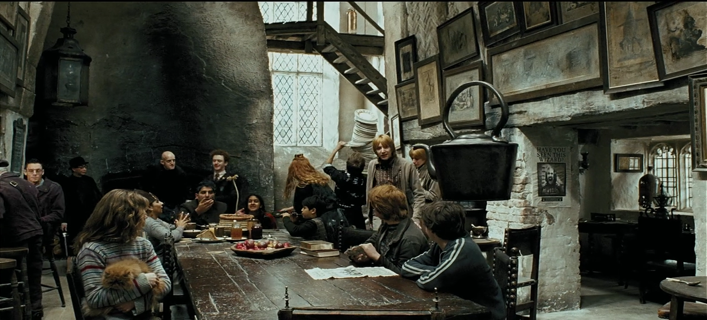

Leaky Cauldron
While Harry is living with the Dursleys, Aunt Marge comes to visit. When he and his late parents are insulted by Marge, an angry Harry accidentally inflates her. Harry packs up his stuff and leaves the house, choosing to spend the last weeks of summer at the Leaky Cauldron inn in London. While there, Harry is warned that a former follower of Voldemort, named Sirius Black, is seeking him out after having escaped from the wizard prison, Azkaban.
